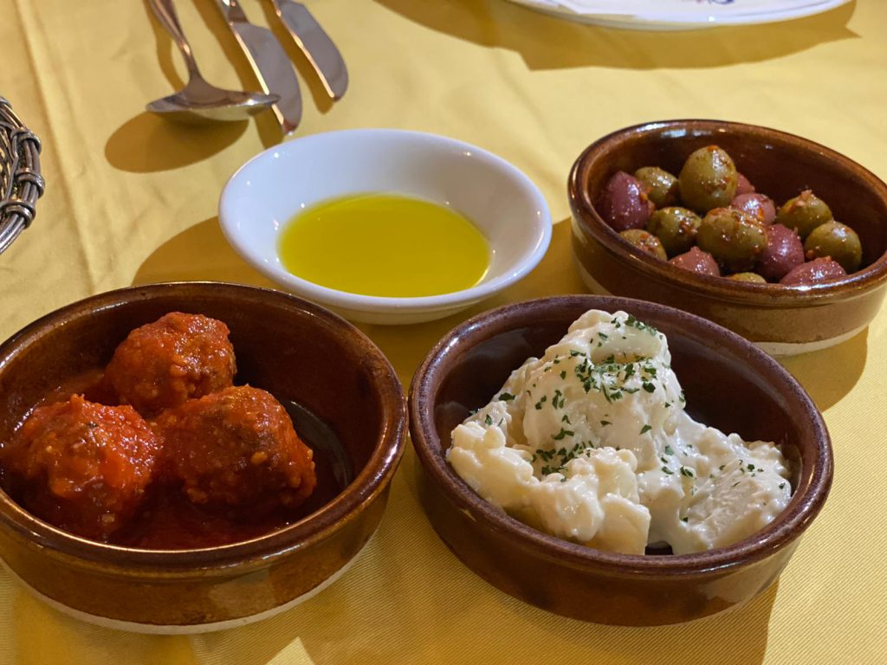
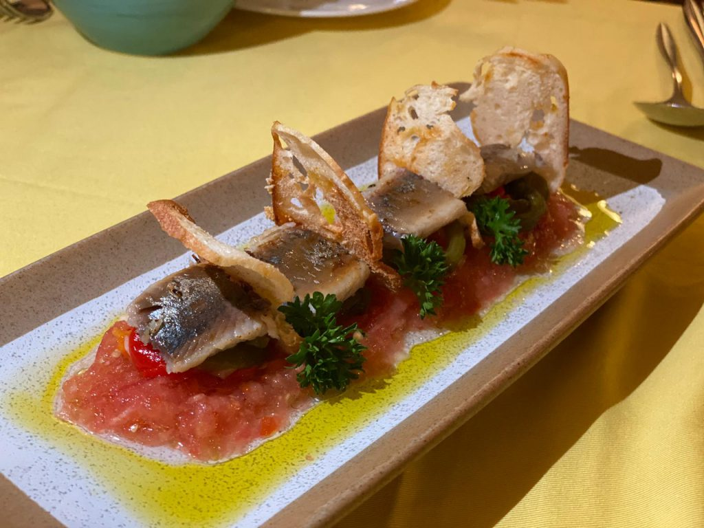
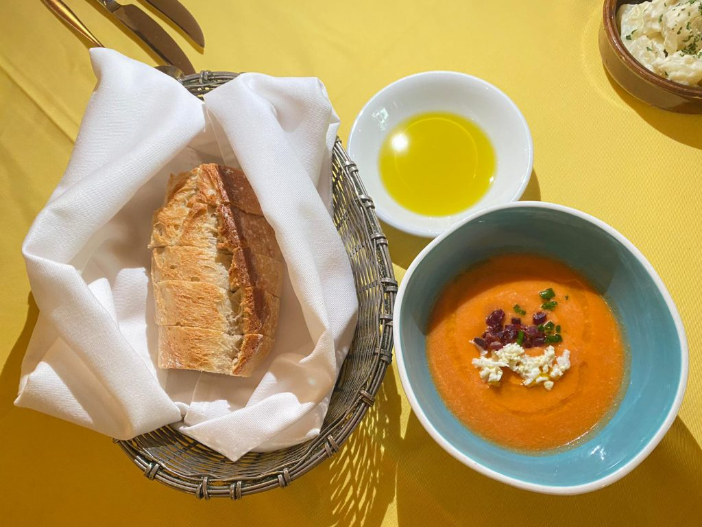

文化
西班牙三面環海，飲食呈現地中海餐飲特征，喜歡用橄欖油、奶酪、魚類、番茄、大蒜等，曾經佔領過這片土地的阿拉伯人帶來了藏紅花、孜然等香料，以及茄子、大米、柑橘等食材。烹調方式上，炸製站著舉足輕重的地位。一口一個的Tapas，顏色豐富的西班牙燉飯，美味與卡路里戚風的Churros，構成了港人對西班牙美食的最初印象。
特色
西班牙人是非常注重吃喝玩樂的民族，天生熱情好客，喜愛與朋友聚會並愛夜生活；因此酒吧、餐廳林立；大部分的西班牙人會願意花超過20%以上的收入在飲食和娛樂上。西班牙飲食文化的一大特色即一「露」二「長」。顧名思義，露，就是在露天環境下用餐。餐廳、酒吧、小吃店等都設有露天餐檯。二長。一爲用餐時間長，二則爲店鋪的營業時間長。西班牙的日常作息時間都較晚，餐飲業的午間營業大致爲14：00-16：00，晚間從20：30至翌日凌晨2:00左右結束。
菜餚
餐前小食
煙燻沙甸魚脆多士
雪利酒炒香菇菌

蕃茄凍湯Salmorejo
